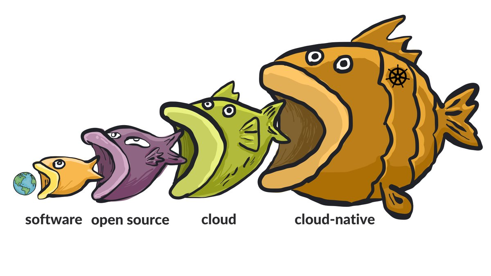
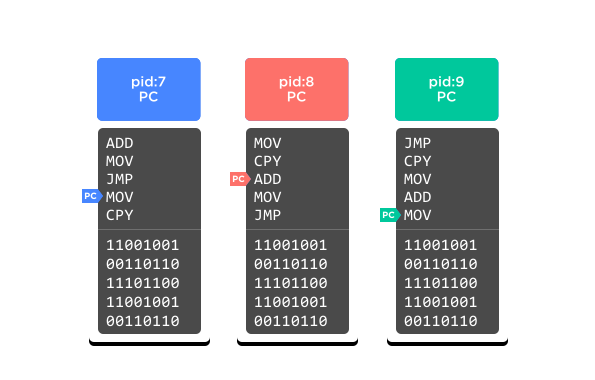

Director of DX, Platform.sh
PHP-FIG Core Committee
implements Huggable

(Source: @bassamtabbara )
Cloud-based hosting is the big thing
What is a cloud, and what's it mean?
Clouds usually built using "containers"...
What is a container?
Not this container.
It's like shipping containers, right?
This is not a container.
I hear it has to do with whales.
This is not a container.
Container for plankton?
Uses containers, but not what containers are.
The first lie
"Processes"
CPU, essentially single-thread
Instructions one by one
Program Counter tracks current instruction
I/O is slow, do other stuff while waiting?
Operating System
"Software that manages software"
Operating System
Coordinates with CPU
Manages "context switching"
Swap out Program Counter
Handles Virtual Memory
Tick: Timer interrupt
CPU: Hey OS, switch places?
OS: Here's new PC
"Scheduler"
Virt Mem: Every program starts at addr 0
Operating system
Multiple cores?
Multiple threads?
Multiple Program Counters!
How to keep track of PCs and memory?
"Process"

Process ID, Code stream, Program Counter, Memory block
Processes
Know about each other
Communicate with each other
Get the same system info from OS
Spawn new processes
Create new by forking or "start that file on disk"
* Clouds, big thing
* Clouds taking over
* Clouds built on containers (tupperware pic)
* Shipping containers pic (false)
* Whale pic (false)
* Docker pic (very false)
* Lies! (pic)
* Peel back the lies; just what is a container?
* Computer
* Process (fig 1)
* Virtual memory (still fig 1?)
Larry Garfield
Director of Developer Experience Platform.sh
Continuous Deployment Cloud Hosting
Stalk us at @PlatformSH